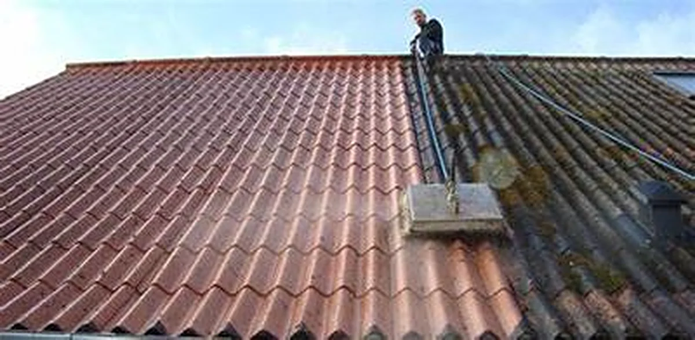

Durée de vie prolongée
01
Traitement de toiture
Nous vous proposons un procédé exclusif pour prolonger la durée de vie de votre toiture. Nous vous accompagnons pour la rénovation de votre toiture avec différentes étapes.
- Démoussage
- Traitement
- Rinçage
- Réimperméabilisation avec hydrofuge ou peinture de toit
L’entretien permet de préserver la toiture et de garantir l’étanchéité et l’isolation de votre habitation.
